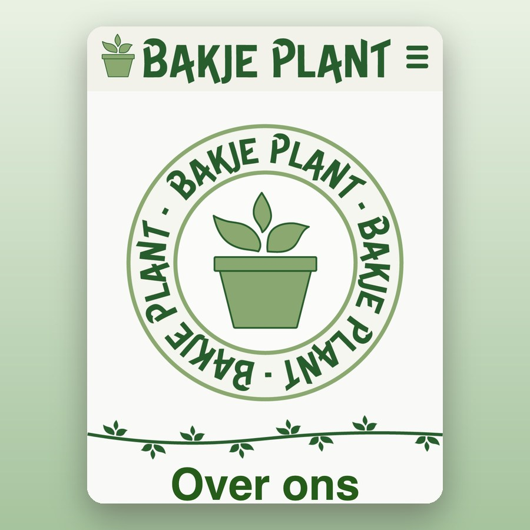
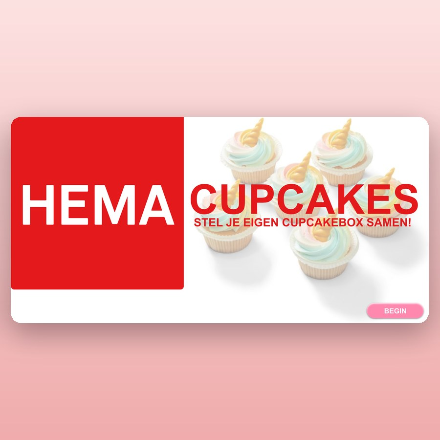

Portfolio — Tess Kollof
Visual design Webdesign Frontend
beweeg je muis over de letters
Hoi! Ik ben Tess, een enthousiaste en gedreven CMD-student aan de Hogeschool van Amsterdam. Met een passie voor zowel frontend development als visual design, streef ik ernaar om boeiende en gebruiksvriendelijke digitale ervaringen te creëren. Mijn doel is om mijn vaardigheden verder te ontwikkelen en bij te dragen aan innovatieve projecten in de toekomst. Ik ben nog steeds lerende en sta open voor nieuwe kansen en uitdagingen.
Laten we samenwerken!
Bekijk mijn projecten
-
Boekenzoeker
Een boekenzoeker voor kinderen, ontworpen in de huisstijl van Gemeente Amsterdam.
Bekijk -

Bakje Plant
Een mobiele website die Amsterdammers bedankt voor het groener maken van de stad. Zelf ontworpen én gecodeerd.
Bekijk Code op GitHub -

HEMA Cupcakes
Een bestelflow waarin je je eigen cupcakebox samenstelt, volledig in de huisstijl van de HEMA.
Bekijk -
Er komt steeds werk bij — de rest staat op GitHub.
Meer projecten
Contact
Een vraag, een stage of gewoon even sparren? Ik hoor het graag.